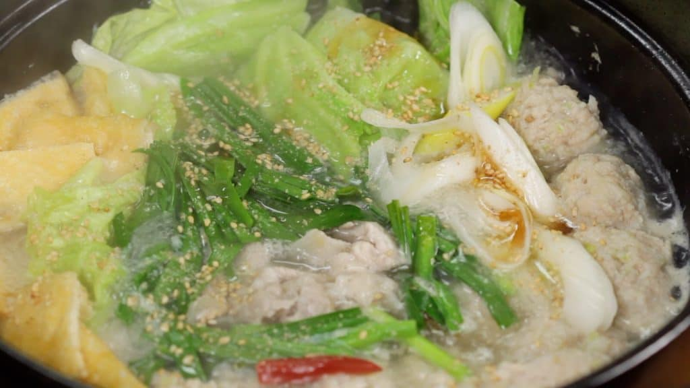

Chankonabe

Description
Chankonabe(Japanese: ちゃんこ鍋), also known as Chanko or Sumo Stew, is a Japanese stew (a type of nabemono or one-pot dish) commonly eaten in vast quantity by sumo wrestlers as part of a weight-gain diet.
Ingredients
Broth
- Chicken Stock - 600ml water + 1 tbsp chicken stock powder
- Sake - 3 tbsp
- Salt - 1 tsp
- Sugar - 1/2 tbsp
- Dried Red Chili Pepper - 1
- Garlic Clove grated - 1
Chicken Meatballs
- Ground Chicken - 200g
- Salt - 1/4 tsp
- Pepper - 1/2 tbsp
- Sake - 20g
- Grated Ginger Root - 60g
- Long Green Onions (Naganegi) chopped -
- Potato Starch - 1 tbsp
Other ingredients
- Extra-Thin Pork Slices for shabu-shabu - 100g
- Aburaage thin deep-fried tofu - 1
- Cabbage Leaves - 3
- Long Green Onion (Naganegi) - 1
- Garlic Chives -
- Toasted White Sesame Seeds ground - 1 bundle
- Sesame Oil - 1tbsp
To finish off the rest of the broth
- 1 package - Fresh Ramen Noodles
- Spring Onion Leaves chopped
- Butter
- Toasted Nori Seaweed
- Pepper
Instructions
-
Let's prepare the aburaage, thin deep-fried tofu. Remove the excess oil with a paper towel. Lightly warming the aburaage in a microwave beforehand will help remove the oil. Cut the aburaage into bite-size pieces.
-
Remove the firm stalk from the cabbage leaves. Slice the stalk thinly so that you can use it in stir-fried dishes later. Roughly cut the leaves into smaller pieces.
-
Cut the garlic chives into 5cm (2") pieces and separate the leaf part and stalk part, and slice the long green onion into 1cm (0.4") slices diagonally.
-
Halve the dried red chili pepper, and remove the seeds.
-
Let's prepare the chicken meatballs. Place the ground chicken in a bowl, and add the salt, pepper, sake and grated ginger root. Squish the meat with your hand to mix thoroughly.
-
Then, add the chopped long green onion and potato starch.
-
Loosely spread your fingers forming a rake shape, and mix the meat mixture until it turns gooey.
-
Now, let's make the Chankonabe using an earthen pot. Combine the chicken stock, sake, salt, sugar and grated garlic clove. Lightly stir the broth. Add the dried red chili pepper, and turn the heat to medium.
-
When it begins to boil, cook the chicken meatballs also known as Tori Dango.
-
Shape the ground chicken into a bite-size ball with a spoon, and drop the tori dango into the broth. Dampening the spoon will help keep the meat from sticking.
-
Repeat the process and place all the meatballs into the pot.
-
At first, the meatballs will sink to the bottom, but they should begin to float to the surface when cooked.
-
Remove the foam, but the grated garlic is also on the surface so be sure not to remove it.
-
Add the aburaage, thin deep-fried tofu, cabbage leaves, long green onion, the stalk part of the garlic chives, and the extra-thin pork slices. We are using the pork slices for shabu-shabu, a Japanese hot pot dish.
-
When all the redness in the pork has disappeared, add the leaf part of the garlic chives.
-
Sprinkle on the ground white sesame seeds. Finally, drizzle on the sesame oil.
-
Place the ingredients in a bowl and enjoy the delicious chankonabe. When the broth is reduced, add chicken stock and adjust the taste with salt.
-
And now, let’s make the delicious Shio Butter Ramen with the remaining broth, and enjoy it to the last drop.
-
Cook the ramen for a little less time, and coat the noodles with a small amount of sesame oil to keep them from sticking.
-
Immerse the ramen in the remaining broth.
-
When the noodles warm up, place them into a bowl. Ladle the soup over the ramen.
-
Garnish with the toasted nori seaweed and chopped spring onion leaves. Finally, top with a slice of butter. You can also sprinkle on pepper to taste, adding a bit of kick to the dish.